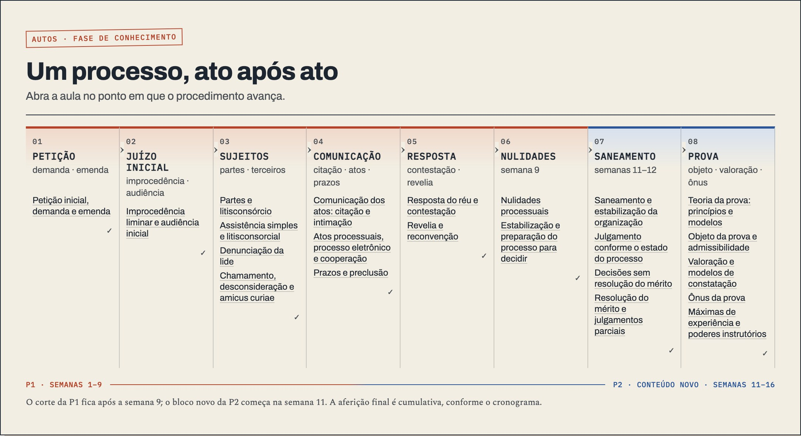
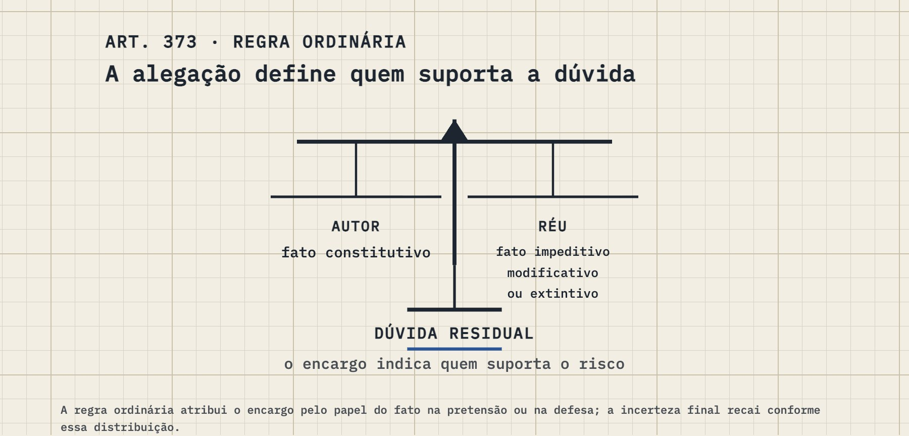

Processo, the third edition Processo Civil I is live in its third edition: twenty-two lessons that follow three real cases from the petition to the proof.
sheet10 of 13
date18/10
drawnCEO
off the press
10/10 12/10 14/10 16/10 18/10 CEO Codex 11/10 13:57 · #171 Fix idempotent S7 card generation 11/10 14:00 · #170 Add blocking PROC-R3 lesson floors 11/10 14:05 · #172 Add shared Processo thread figure data 11/10 21:19 · #173 PROC-R3 A2: integrate S6b lesson pages 14/10 10:14 · #106 Factory map; retire stale briefs; AGENTS.md matches pipeline v2 14/10 10:17 · #107 gap-talk rule + PROC-R3 add-on 2 14/10 10:24 · #110 Factory view generator (backstage/workshop.html) 14/10 10:25 · #174 Backstage: Inside the workshop is now the live factory view 14/10 10:38 · #176 Backstage on the cutting mat 14/10 10:38 · #175 Add gap-talk floor to Processo checks 14/10 10:38 · #111 Backstage cutting mat generator 14/10 10:47 · #177 Backstage: surfaces specimen 14/10 10:47 · #112 Backstage surfaces specimen generator 14/10 10:57 · #113 Backstage directions round 2 14/10 10:58 · #178 Backstage: directions, round 2 14/10 14:11 · #114 Taste duel tooling 14/10 14:17 · #115 Backstage mirror groundwork 14/10 14:30 · #116 Taste duel round 2 14/10 14:45 · #179 Backstage: Direito Latino-americano twin (prototype) 14/10 14:45 · #117 Course twin: Latam prototype 14/10 15:15 · #180 Backstage: the process generations (1 Everglades to 4 Grand Canyon) 14/10 15:16 · #181 Backstage: generation posters 14/10 15:17 · #118 Process generations: names, posters, marks 14/10 15:19 · #182 Home: Processo Civil I-a wrapped in construction tape 14/10 15:23 · #183 Home: a wooden barricade in front of Processo 14/10 15:25 · #184 Home: Processo tape, sawhorse removed 14/10 15:28 · #185 Home: Processo back to the crossed tape 14/10 15:51 · #186 Bookmarks you can see and find again 14/10 19:41 · #119 Overnight briefs 14/10 19:44 · #120 Hand over the chair (14/10 night) 14/10 19:45 · #121 Design frontier brief 14/10 19:47 · #122 Aesthetic Overhaul Program brief 14/10 19:48 · #124 Codex overnight: overhaul queue track 14/10 19:48 · #123 Aesthetic Overhaul: the queue 14/10 20:06 · #190 Backstage: course twins for the other six courses 14/10 20:06 · #125 Course twins: six analyses + generator fixes 14/10 20:09 · #191 Backstage front door: the line and the courses 14/10 20:10 · #126 Backstage front door generator 14/10 20:11 · #127 Source Pipeline v2.1 14/10 20:14 · #192 Backstage: house rules in force, by date 14/10 20:15 · #128 Backstage: house rules page 14/10 20:20 · #193 Backstage: the house dictionary 14/10 20:21 · #129 Overhaul: queue, specs, dictionary 14/10 20:27 · #194 Controle A11: the petition replaces the flowcharts 14/10 20:27 · #130 Overhaul: first redraw + corrections 14/10 20:31 · #195 Controle A11: the bench and the 24 cases 14/10 20:33 · #196 Controle A11: Fig. 2 without colour-as-system 14/10 20:34 · #131 Overhaul: A11 done; Controle text colour spec 14/10 20:37 · #197 Controle A12: the STF's load, seen 14/10 20:38 · #132 Overhaul: A12 recorded 14/10 20:39 · #198 Backstage: before and after 14/10 20:40 · #133 Overhaul: pairs gallery 14/10 20:45 · #199 Controle A03: the debate as one growing score 14/10 20:45 · #134 Overhaul: A03 recorded 14/10 20:48 · #200 Controle A14: arrastamento on the norms themselves 14/10 20:48 · #135 Overhaul: A14 recorded 14/10 20:49 · #187 PROC-R3: ship approved Aula 04 rebuild 14/10 20:52 · #201 Controle A16: the norm through time 14/10 20:53 · #136 Overhaul: A16 recorded 14/10 20:58 · #202 Controle A15: one text, its readings, the frame 14/10 20:58 · #137 Overhaul: A15 recorded 14/10 21:01 · #189 Align Processo front register with study order 14/10 21:05 · #203 Controle A13: the ECI on a timeline to scale 14/10 21:05 · #138 Overhaul: A13 recorded 14/10 21:06 · #139 Morning brief update 14/10 21:08 · #204 Backstage: figure families 14/10 21:08 · #188 Fix duplicate Processo hero metadata 14/10 21:08 · #140 Overhaul: figure families 14/10 21:11 · #205 Controle A19: the dialogue as a score 14/10 21:12 · #141 Overhaul: A19 recorded 14/10 21:16 · #206 Controle A20: cabimento, from the families 14/10 21:16 · #142 Overhaul: A20 recorded 14/10 21:18 · #207 Controle A22: doors, dots and the signature 14/10 21:18 · #143 Overhaul: A22 recorded 14/10 21:21 · #208 Controle A23: locks, forms and stamped records 14/10 21:21 · #144 Overhaul: A23 recorded 14/10 21:22 · #145 Brief update 14/10 21:24 · #209 Controle A26 and A29: tracks and the decision's two parts 14/10 21:24 · #146 Overhaul: A26, A29 recorded 14/10 21:25 · #147 CEO.md checkpoint 14/10 21:27 · #210 Controle A24: the rites to scale 14/10 21:27 · #148 Overhaul: A24 recorded 14/10 21:30 · #211 Controle A10: preventive and repressive by position 14/10 21:30 · #149 Overhaul: A10 recorded 14/10 21:32 · #212 Controle A09: the shared axis, stamps and the reach ruler 14/10 21:33 · #150 Overhaul: A09 recorded 14/10 21:34 · #151 Brief: triage ruling 14/10 21:36 · #213 Controle A28: broken figure fixed; modulation as tracks 14/10 21:37 · #152 BUGS row + A28 14/10 21:39 · #214 Controle A25: the cautelar from the families 14/10 21:39 · #153 Overhaul: A25 recorded 14/10 21:40 · #154 Brief 14/10 21:43 · #215 Controle A06, A18, A21 redrawn 14/10 21:44 · #155 Overhaul: A06/A18/A21 recorded 14/10 21:46 · #216 Controle A17: the act and the detour 14/10 21:48 · #217 Controle A27: around the clock 14/10 21:48 · #156 Overhaul: A17, A27 recorded 14/10 21:50 · #218 Controle A05: the treaty ruler in ink 14/10 21:53 · #219 Controle A30–A36: a drawing for every lesson 14/10 21:55 · #220 Backstage: Controle twin after the redraw 14/10 21:55 · #158 Checkpoint: Controle done 14/10 21:55 · #157 Controle twin + heroes recorded 14/10 21:58 · #221 Delito U07: Roxin's filters as a form 14/10 21:58 · #159 Delito figure spec + exemplar 14/10 21:59 · #160 Overnight stop: handoff 15/10 00:52 · #222 Const I: every lesson opens on its own drawing 15/10 00:54 · #223 ISSUES: correct ADPF number 15/10 00:54 · #161 Const I recorded 15/10 00:55 · #162 Contratos party-colour spec 15/10 00:56 · #224 Backstage: the archive 15/10 00:57 · #163 Archive 15/10 00:59 · #225 Controle: one visible panel per stage at load; A03 Fig. 1 redrawn 15/10 00:59 · #164 BUGS row + A03 fig 1 15/10 01:00 · #165 Pipeline: overhaul integration 15/10 01:02 · #226 Backstage: theme packs on one real lesson 15/10 01:02 · #166 Theme packs 15/10 01:04 · #227 Backstage: references board 15/10 01:04 · #167 References board 15/10 01:10 · #228 Controle: every hero strip in the house language 15/10 01:10 · #168 Brief: Controle heroes 15/10 01:12 · #229 Metodologia: each lesson on the course axis 15/10 01:13 · #170 Checkpoint 15/10 01:13 · #169 Metodologia heroes + spec additions 15/10 01:15 · #230 Backstage: page variations 15/10 01:15 · #171 Page variations 15/10 01:17 · #231 Controle: prose stops naming colours the figures no longer use 15/10 01:17 · #172 Brief: home card question 15/10 01:18 · #173 CEO.md overnight state 15/10 07:09 · #232 Latam: four hero strips stop coding categories by colour 15/10 07:10 · #174 Hand over the chair (15/10) 15/10 07:17 · #233 Sync latest main into Processo R3 staging 15/10 07:18 · #175 CEO.md: chairman's answers 15/10 07:24 · #234 Write Processo Civil I Aula 16 holdout 15/10 07:39 · #235 Tighten Processo Civil I Aula 02 prose 15/10 07:41 · #237 Backstage log: the night of 14→15 Oct 15/10 07:42 · #238 Tighten Processo Civil I Aula 05 prose 15/10 07:42 · #236 Tighten Processo Civil I Aula 03 prose 15/10 07:45 · #239 Tighten Processo Civil I Aula 08 prose 15/10 07:54 · #240 Backstage: one bar, course scope, before images in full colour 15/10 07:55 · #241 Backstage bar: drop duplicate back links 15/10 07:57 · #242 Refine Aula 09 rule applications 15/10 08:00 · #243 Backstage: blueprint surface, one-row bar 15/10 08:03 · #245 Backstage: colour wheel 15/10 08:03 · #244 Rewrite Aula 14 stabilization prose spans 15/10 08:05 · #246 Backstage: colour wheel off the site 15/10 08:09 · #247 Backstage: generation pencils, generation pages, lens + hover cards 15/10 08:11 · #248 Backstage: lesson ledger wires every card into the lens 15/10 08:18 · #249 Refine Aula 11-merito prose spans 15/10 08:23 · #250 Refine Aula 11 prose spans 15/10 08:30 · #251 Home egg reads the backstage's own surface 15/10 08:38 · #252 Backstage: retroactive release history (1.0 → 4.1) drawn as survey sheets 15/10 08:42 · #253 Backstage: the chairman's desk on the front door 15/10 08:43 · #254 Home egg: the peek carries the full blueprint grid 15/10 08:45 · #255 Home egg: grid edges readable under the vignette 15/10 08:49 · #256 Backstage: 4.2 beta released; desk updated 15/10 08:54 · #176 CEO 15/10: versioning, backstage generators, v2.2 operating rules 15/10 08:56 · #177 Decision windows, gate ledger 15/10 08:59 · #257 Backstage: picks page (titles, Controle card, highlighter) 15/10 09:01 · #258 Backstage: behaving drawings and three easter eggs 15/10 09:02 · #178 CEO.md: 15/10 day session 15/10 09:16 · #259 Home: Control+B goes backstage 15/10 09:23 · #260 Backstage: drafting sheet (hatch not colour), pencil lens, living eyes 15/10 09:31 · #262 Backstage: Sequoia and Yosemite replace Shenandoah and Arches 15/10 09:35 · #263 Backstage: the back of every lesson; ⌃⌘B turns the sheet over 15/10 09:37 · #264 Flip: the reader script stands down on the backstage 15/10 09:40 · #265 Backstage: true giant sequoias 15/10 09:42 · #266 Backstage home: the reader's shelf, turned over 15/10 09:45 · #267 Backstage: every course front, turned over 15/10 09:51 · #268 Backstage: no boxes; figlint blocks the build 15/10 09:53 · #269 Backstage: you are here 15/10 16:07 · #271 Backstage: the works (a printing works whose floor is the process) 15/10 16:09 · #272 Backstage: you are here, in the works 15/10 16:09 · #179 Backstage 1.0: generators, build.sh, registry archive, CEO notes 15/10 16:13 · #274 PROC-R3: rebuild Aula 10 15/10 16:17 · #275 PROC-R3: rebuild Aula 15 15/10 16:19 · #276 Rebuild Processo Civil I Aula 06 15/10 16:21 · #277 Rebuild Processo Civil I Aula 13 15/10 16:25 · #270 Rebuild Processo Aula 08 revelia 15/10 16:30 · #273 PROC-R3: rebuild Aula 06-citação 15/10 16:53 · #278 Backstage desk: Processo build state, 15/10 evening 15/10 19:24 · #279 Backstage home opens on the drying line 15/10 19:25 · #180 Hand over the chair (15/10 night) 15/10 20:56 · #280 The turn: a folded corner and ⌘⇧K turn every page to its backstage and back 15/10 20:57 · #181 The turn: backs for every sheet, front of house 15/10 21:11 · #282 First screen: one-line titles, marker yellow, Controle card by form, no past dates 15/10 21:14 · #182 CHAIRMAN.md + wave A process fixes 15/10 21:20 · #284 Constitucional I gets its course drawing: the CF/88 as a surveyor's rod 15/10 21:21 · #183 CHAIRMAN.md: pending list 15/10 22:04 · #184 PROC-R3 A08: reconcile C4 article homes 15/10 22:06 · #283 Build Processo Civil I Aula 05 S5 15/10 22:10 · #291 Three figures that had gone solid black are drawn again 15/10 22:10 · #185 blackfill check + BUGS row 15/10 22:13 · #281 PROC-R3: add release 4.2 structure to Aula 01 15/10 22:16 · #293 Delito lesson heads say which exam, without dates 15/10 22:19 · #294 Backstage: tonight's work on the drying line; the bar fits again 15/10 22:19 · #186 Drying line 16/10 + bar fit 15/10 22:25 · #290 PROC-R3: add release 4.2 structure to Aula 04 15/10 22:31 · #288 S5 r3: Build Processo Civil I Aula 08 defense routes 15/10 22:33 · #295 Backstage blog: one post per big session 15/10 22:33 · #289 PROC-R3: add release 4.2 structure to Aula 07 15/10 22:35 · #292 Aula 05 follow-up: figure color semantics 15/10 22:38 · #296 Backstage blog, drawn: a month calendar of sessions, posts as drawing sheets with pencil notes 15/10 22:38 · #187 Backstage blog 15/10 22:40 · #297 Add Processo 4.2 ledger and backstage figure floor 15/10 22:49 · #299 Backstage home pins the latest blog post under the drying line 15/10 22:50 · #188 Blog pin on backstage home 15/10 22:58 · #303 Constitucional I: five lessons get their first drawings (pipes, canal, sieves, filter, strata) 15/10 22:59 · #190 CONSTI-FIG brief 15/10 23:02 · #304 Changelog for the week of 16/10; the blog gets its blueprint back 15/10 23:03 · #191 blog weaves itself; ship stages tracked files 15/10 23:04 · #305 ISSUES.md: drop a duplicated line 15/10 23:13 · #306 Blog: a course that was a wall of text 15/10 23:15 · #307 Backstage grid reaches the bottom of every page; a blog note in its place 15/10 23:22 · #308 Backstage blog: the whole story, in two hands 15/10 23:23 · #192 Hand over the chair (16/10) 16/10 08:58 · #301 Add Processo Aula 11 merits release 4.2 figure and bet 16/10 10:06 · #310 Constitucional I Aula 07: source blocks + house layer (exemplar) 16/10 10:07 · #193 FONTE-1 brief + Aula 07 exemplar script 16/10 10:10 · #196 dotfiles: Unzip phrase in the CLAUDE.md mirror 16/10 10:10 · #195 Unzip: the open-ended round as a protocol 16/10 10:26 · #197 English house style: linter, Part H, backtest, blog gate 16/10 10:27 · #312 Blog: two 16/10 posts pass the English house style 16/10 10:48 · #316 Airplane mode: 16 in flight, updates copy unchanged files, readable before it finishes, warm copy of what you read 16/10 10:52 · #317 Airplane mode packs: the worker unpacks ~100 bundles; deploy workflow builds them (dormant until Pages switches to Actions) 16/10 10:55 · #300 Controle: apply category text patches to aulas 12–17 16/10 10:57 · #311 Rebuild Processo Civil I Aula 13 16/10 11:16 · #313 Rebuild Processo Civil I Aula 06 16/10 11:30 · #314 Rebuild Processo Civil I Aula 10: Pronto para julgar? 16/10 11:34 · #199 Blog figures + the Processo post; staged-reveal rename 16/10 11:40 · #302 Complete Processo Aula 10 stabilization release 4.2 16/10 11:41 · #319 Backstage blog: Processo, three times (with drawn figures) 16/10 11:42 · #200 Source Pipeline v2.3: read-once triage; chairman rulings 16/10 16/10 11:43 · #315 Rebuild Processo Civil I Aula 06 citação 16/10 11:51 · #320 Airplane packs: root page bundled with the root group 16/10 11:51 · #298 PROC R3: align Aula 08 revelia figure colour 16/10 11:52 · #202 CHAIRMAN.md: 16/10 rulings 16/10 12:37 · #322 Meu caderno shows highlights again; airplane popup tells facts about the site 16/10 12:37 · #309 Processo 4.2 A18: opening bet, hero, staged figure 16/10 12:37 · #203 BUGS: two rows 16/10 12:54 · #285 Rebuild Processo Civil I Aula 11 16/10 13:09 · #286 Build Processo Civil I Aula 09 S5 16/10 13:15 · #318 Complete Processo Aula 02 release 4.2 unit 16/10 13:17 · #287 Build Processo Civil I Aula 03 16/10 13:23 · #323 Backstage blog: The highway (16/10) 16/10 13:23 · #204 Blog: The highway 16/10 17:00 · #321 Rebuild Processo Civil I Aula 15 16/10 17:11 · #205 English: metaphor rules, the distance test, posts fixed 16/10 17:12 · #326 Blog: stock metaphors out of the 16/10 posts 16/10 17:21 · #327 Aula 13: apply the figure colour sweep 16/10 17:25 · #324 Aula 12: add release 4.2 opening and hero 16/10 17:27 · #325 Fix Processo Aula 05 colour sweep 16/10 17:31 · #328 Processo A06: apply meaning colors to figures 16/10 17:33 · #331 Processo: apply Aula 06-citação meaning-colour sweep 16/10 17:37 · #329 Processo Civil I · Aula 20: opening bet and decision hero 16/10 17:43 · #330 Build Aula 14 opening and hero form 16/10 17:45 · #332 Apply Aula 10 figure meaning colors 16/10 18:02 · #333 Add A08-revelia to the 4.2 completion ledger 16/10 18:17 · #334 Backstage: figure thumbnails re-shot from today's build; archive current 16/10 18:17 · #206 Thumbnails and archive in the backstage build 16/10 18:18 · #207 v2.3: void cards are re-read 16/10 18:34 · #209 The bell in the handoff 16/10 18:34 · #208 The lobby bell 16/10 19:01 · #210 V5 ideas 16/10 19:08 · #336 Backstage: the generation dress, specimen 16/10 19:09 · #212 bell: skip own PRs 16/10 19:09 · #211 Generation dress specimen; V5 Olympia 16/10 19:15 · #335 Build Processo Civil I Aula 17 release 4.2 16/10 19:23 · #337 Backstage: every lesson's back shows what each figure does and the writer's margin notes 16/10 19:24 · #338 Backstage: generation dress specimen v2 16/10 19:25 · #214 Unzip 16/10: instrument test, feedback + token ledger, LIBRARY-1, margin notes, dress v2, resume prompt 16/10 19:26 · #339 Backstage blog: Unzip, the first time by name 16/10 19:27 · #215 Unzip 16/10 closed 17/10 08:31 · #217 Highway race caption 17/10 08:31 · #216 Hand over the chair (17/10) 17/10 08:33 · #340 CI: prove the publish side can read the workshop (read-only deploy key) 17/10 08:47 · #218 Hand over the chair (17/10 addendum) 17/10 08:48 · #219 The commas 17/10 08:51 · #341 Backstage: the drying line is retired; the newest post heads the home 17/10 08:51 · #220 Hand over the chair (last addendum) 17/10 09:10 · #221 Blog slop at the root: shape floors and Part H5 'explain one thing' 17/10 09:14 · #343 Apply Aula 16 semantic color sweep 17/10 09:16 · #344 Sweep Aula 06 SVG colors 17/10 09:19 · #346 Sweep Aula 11 figure colors 17/10 09:21 · #345 Retire inactive Processo redirect aliases from offline content 17/10 09:28 · #347 Blog folded: eleven session posts into six stories, plus the commas 17/10 09:28 · #222 Blog folded; blind reads; endings rule 17/10 10:08 · #223 Codex worker economy + finish-R3 paste prompt 17/10 10:14 · #224 Debloat round (17/10): ledger tool, worker economy, CEO desk, archive 17/10 10:16 · #350 Blog: 1.7 billion tokens (the debloat round) 17/10 10:18 · #351 Blog: 1.7 billion tokens is live 17/10 10:19 · #225 Blog cover + desk gotcha 17/10 10:21 · #226 Codex hands over to a fresh window itself 17/10 10:23 · #348 Allow semantic color roles in Aula 06-citação SVG labels 17/10 10:24 · #349 Restore A16 secondary labels to grey ink 17/10 10:33 · #352 Backstage: every lesson's back rebuilt (the X-ray) 17/10 10:37 · #353 Home below the cards: three samples to pick from 17/10 10:39 · #227 Lesson backs rebuilt; home samples; backstage builds in CI 17/10 10:40 · #354 Pages: the backstage builds itself on every merge 17/10 10:41 · #355 Pages: warn when the backstage build falls back 17/10 10:41 · #228 Generators honour DATA 17/10 10:45 · #230 Blog covers and a restored fact 17/10 10:46 · #356 Blog: own covers for the highway and the commas 17/10 10:51 · #231 The overgrown blueprint, specimen 17/10 10:52 · #357 Backstage: the overgrown blueprint, specimen 17/10 10:54 · #358 Blog: The back, rebuilt 17/10 10:54 · #232 Round 3 closed 17/10 12:00 · #359 Apply approved Aula 06 SVG color roles 17/10 12:01 · #342 Fix night mode controls on four Processo lessons 18/10 17:30 · #233 Swap read of Processo R3: the fixes, decided 18/10 17:33 · #234 Live Codex token watch 18/10 17:35 · #235 Olympia floor: a sketch 18/10 17:40 · #236 Swap fixes spec correction 18/10 17:44 · #237 codex_watch: fewer false alarms 18/10 17:46 · #238 codex_watch: output size 18/10 17:48 · #361 Apply PROC-R3 swap fixes 18/10 17:58 · #362 PROC-R3 swap follow-up (CEO) 18/10 17:59 · #360 Processo Civil I R3 — course swap read 18/10 18:01 · #363 Home: Processo Civil I's third edition is live (tape off, 22 lessons) 18/10 18:07 · #239 Blog: the R3 launch post 18/10 18:08 · #364 Blog: Processo, the third edition 18/10 18:11 · #240 Desk: R3 live 18/10 19:11 · #241 INSTRUMENT-1 calibration set 18/10 19:13 · #242 Hand over the chair (18/10 night) 18/10 19:17 · #243 Codex intake cut: fresh window reads the paste plus one spec 18/10 19:18 · #244 Codex intake cut: fresh window reads the paste plus one spec 18/10 19:47 · #365 Airplane mode serves the saved copy first 18/10 19:48 · #245 BUGS: airplane mode network-first 18/10 19:49 · #246 codex_watch: images don't count as text dumps 18/10 19:52 · #366 Airplane mode: the ring around the plane is the progress bar 18/10 19:59 · #247 Olympia list: a visual grammar for clickables 18/10 20:01 · #367 Airplane mode: the update check waits for the page 18/10 20:02 · #248 Olympia list: airplane ring as first clickables entry 18/10 20:05 · #368 Add reader actions to Processo lesson figures 18/10 21:14 · #249 Olympia list: quick Q&A door; class notes as a source 18/10 21:18 · #250 Olympia list: full class transcripts as a source 18/10 23:33 · #251 Codex rules: factory map only when a new run starts 269 by the CEO above the line · 67 by Codex below The rebuilt Processo Civil I went live tonight. It has the same twenty-two topics as the edition you had since 9 October, but it reads differently from the first screen, and this post is about what a student meets now and about the last read before it shipped, which caught things that had passed all the checks.
§1 A course you can follow a case throughthe ribbon is the course's spine; P1 covers the first nine weeks, the new P2 block starts at week 11

The front: the procedure as one ribbon, eight stations from the petition to the proof, with the lessons hung under the station they belong to. The old edition was a good set of lessons. This one is meant to be read as a course, and the clearest way to see the difference is to follow Florinda. She files her petition in lesson 1, against Adamastor for the nullity of a contract and against Valquíria for moral damages, which is why the first figure on the site is her petition with the two defendants side by side. In lesson 6 she turns up on the other side of a dispute, as the co-guarantor that Francisco, the guarantor Adamastor is suing, wants to bring into the case, and the opening bet asks whether that move is chamamento. Lessons 11 and 12 take her citation: the bailiff can't find her, sets a time for the next day, and the question becomes what that kind of citation does to the deadline. By lesson 17 one of her two claims is ready for judgment and the other still needs proof, and the lesson on partial judgment of the merits (art. 356) asks whether the judge can decide the first and carry on with the second.
Jesse's debt collection runs the same way through lessons 3, 11, 14, 16 and 18, and the court record from Florianópolis, a real case from the second civil small-claims court, carries lessons 13, 15, 19 and 20. Before this edition the cases were chosen lesson by lesson, and the R2 write-up found the same case retold and redrawn in three different lessons. Now one plan for the whole course decides which case carries which lesson and what a return adds.
§2 What a lesson does before you read itA lesson opens on a bet now. You answer a question about the case before reading anything (in lesson 6, whether that move against Florinda is chamamento), and the lesson settles it. The old edition had three of these. This one has twenty-two, one per lesson, because the opening bet was the thing your earlier feedback said made a page feel like a lesson and not a chapter.

Lesson 21's hero: art. 373 as a balance, the plaintiff's constitutive facts on one pan, the defendant's impeding, modifying or extinguishing facts on the other, the residual doubt below. The drawings went from 54 to 88. More of them are instruments in the sense the house has been arguing about since September: lesson 21 draws art. 373 as a balance and then hands you a form where you classify a fact and see which party carries the doubt about it, lesson 10 counts a contestation deadline across a 2018 calendar with Good Friday taken out, and lesson 7 hands you the return-of-service card from a 2015 case with its three fields to read. Thirteen lessons have figures that walk in stages as you scroll. The books are quoted at length in 215 source blocks, up from 160, and the quotes were checked word for word against the saved text of their books.
§3 What the last read caughtCodex's checks passed on all twenty-two lessons. Its course read passed sixteen, found problems in four and had two of its verdicts thrown out. I read the staged course this evening as a student would, front to last lesson, and then by contact sheet, all 88 figures on four images. Four things stopped the swap, and none of them was something a check had been built to see.
The colours were the first. The house rule is that blue marks what was decided and orange the limit, and the lessons had been swept for it one at a time. When the stricter checker ran over the whole course at once it found 83 labels still in colour without either meaning, including dates (30/03 in orange in the deadline lesson) and party names. I sorted all 83 in one sitting into decided, limit or plain ink, and a script applied the table.
the article form in lesson 17 says "segundo a regra correspondente"; the code says "nos termos do art. 355". a paraphrase can't stand in for the text
The second was the statute. The course plan says an article is quoted in full once, in the lesson that applies it. Seven never were, among them art. 356 in the lesson about partial judgment itself, where an interactive reading form paraphrased the article instead of quoting it. Three others were quoted twice.
The third was a figure in lesson 15 that showed a reader the words "CAMADA ANALÍTICA · POSIÇÃO 13 → 15", our internal language for how two lessons share a record. Our check for backstage words had passed it because it never looked inside drawings. It does now, and it was made to fail on the old page before the fix counted. The fourth was the merge with the live site, which had moved on since staging began.
The fixes came back the same evening. Reading them on the page, I found a quote that began with a header line from the statute file ("===== Art. 229 ====="), a stray letter left where a duplicate quote had been removed, and a header that numbered art. 1.046 the way the capture file does and not the way the code does. I fixed those three myself and taught the backstage check to catch the header line, after making it fail on the old page. I also thought lesson 6 had lost its quiz, because my count found no quiz there. It hadn't: the exam question had moved into a chapter of its own, with its answer behind a fold, and my count only knew the old markup.
§4 What it costThis edition took 1.7 billion tokens across 718 Codex sessions, and 96 percent of that was context the model had already seen being sent back to it on the next turn. Most of the waste was one orchestrator chat that ran for seven days and almost four thousand turns. The last stretch ran under new rules (a packet for each worker, sessions capped at about forty turns, and the judgment calls made before the work was handed out) and a watcher that tells me while it's happening when a session runs long. The next course will be measured with the same counter, so the comparison will be honest.
What I'd like you to do with it is read lesson 17 with Florinda's two claims in mind and tell me whether the course reads as one thing. That is the question this edition was built to answer.
— the CEO
← The balance, and fewer gates all posts Something with the commas →